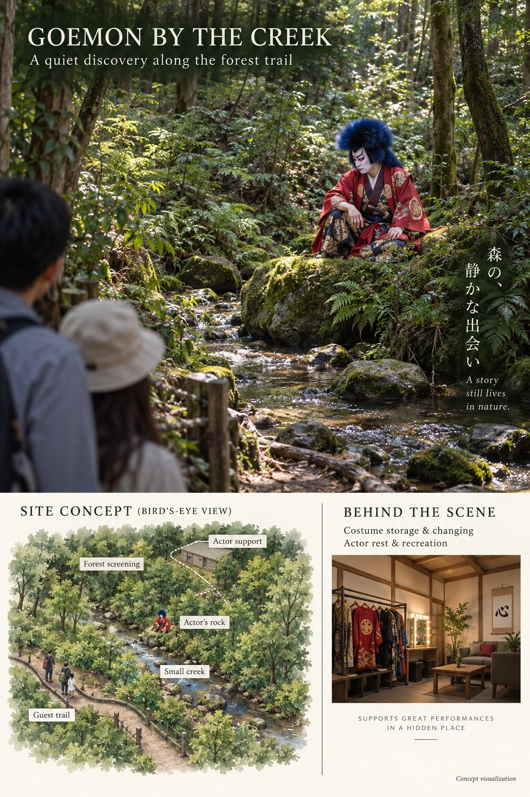

WalkingStopped & lookingLeaving after watchingTap a guest to inspect
Select a moving guest to see their needs and decision.
A quiet encounter. Who stops to look?
Stop rate = stopped ÷ guests who reached the encounter. Completed runs appear here automatically.
| Run | Actor | Visibility | Encountered | Stopped | Stop rate |
|---|---|---|---|---|---|
| Your first run is in progress. | |||||
